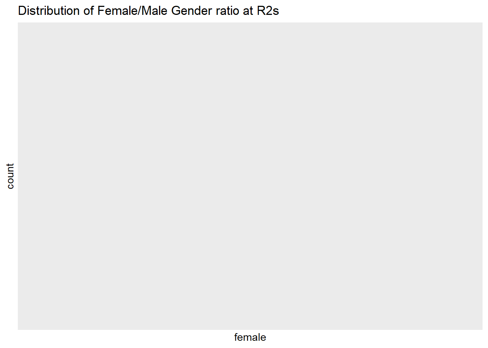

Section 6 Discussion
6.1 Discussion
These results are meant to serve as illustration of the data in the College Scorecard API pertaining to schools at the highest levels of Carnegie Classification. In addition to the descriptive analysis, which demonstrates the distributions of demographics and financial data, our regression analysis demonstrates that the distinction between R1 or R2 classifications has a significant, albeit small effect on unemployment rates for graduates from these universities. Interestingly, the relationship between unemployment and School type was moderated by the proportion of white people at a given university. Commentary on the social conditions surrounding this relationship is beyond the scope of this project and the researchers’ expertise; nevertheless, we hope these results serve others in discussions of systemic issues related to race and higher education.
6.2 The Project Process
We should admit that at the onset of this project our team was lost in the complexity of the data in the College Scorecard API. This was largely due to our own stubbornness, as we wanted to use the API because of the advantages this method offers in regards to reproducibility. That being said, our project scope began to grow exponentially after learning about the rscorecard package, which not only offered a highly interpretable method for extracting the data but also offered further insight into how the data from the API was structured in and of itself.
Prior to developing a plan for our analysis (or even a direction for the project) we began by setting up the repositories and collaborative documents that we planned to use throughout the project. The primary collaborative tools were GitHub, Google Docs, and Discord. We used Discord to keep in contact because of their native support for markdown as part of their messaging service, which allowed us to send code chunks directly to each other, as well as the voice-conferencing and screen sharing functionality that allowed us to meet and discuss progress. The Google Docs were primarily used for planning and drafting the written portions of our project. Lastly, we used github to share files with one another and used the gitpages feature to host the final document as a web page.
The documents in the CollegeScorecardProjectBook repository contain all of the code, data, and configuration files needed in order to knit the bookdown on each team member’s computer. Ultimately, this means that a cloned repository of our GitHub should run and knit, just as long as the user acquires their own API key and installs all the necessary dependencies into their RStudio environment. In truth, this project suffered from quite a bit of “feature creep” once we began working on the project in earnest. As we finally began to understand the data, we realized there were a lot of ways that we could take full advantage of the information at our disposal using the specialized skill sets of our team members. Consequently, we were unable to discuss all of the visualizations that we had made during this process, but have included them in case anyone would like to use our code as reference for their own exploratory projects in the future.
6.3 Things Learned & Skills Acquired
6.3.1 Adam
I was incredibly surprised by how much we were able to glean from only a handful of variables of interest. We definitely came into the exploratory analysis ‘laptops blazing’ to burn down the ivory R1 throne but alas the dataset managed to both defuse our animosity and reveal a much more realistic painting of R1 characteristics. I feel that we were able to learn alot about the diversity characteristics and outcomes of R1 vs R2 schools in spite of the project’s fairly narrow scope. On a different note, I really enjoyed getting to work with holistically skewed and messy data. On a longer time scale I would have loved to seek out and model some of the more obscure latent variables and their relation to student outcomes.
“people use statistics the same way that a drunk uses a lamppost. More for support than for illumination.” Andrew Lang, a long ass time ago
6.3.2 Kalani
Despite my previous endeavors with Bookdown (I had knit one years ago), I struggled to navigate the highly technical documentation available for this package. Nevertheless, I persisted and was able to create a clean document format that parallelled the fantastic work put in by my other team members. Through Adam’s work on statistical analysis, I became re-acquainted with some of the modeling and statistical tools I had used in my undergrad data science and psychology classes, but had also learned more about experimental design from Adam himself. I also collaborated with Sara to make the interactive chloropleth maps using plotly, which I had never done before and am happy I took the time to learn. All in all, I’m really pleased with this project and appreciated the diverse skill set across the members of this team.
“There is no such thing as a ‘good’ programmer; just a competent googler.” ~Unknown
6.3.3 Sara
Most of what I learned from this project I learned from my partners. Kalani’s Bookdown and data-wrangling ingenuity and Adam’s statistics proficiency added layers to the learning experience, and made the assignment fun to work on. I also enjoyed reading Ben’s interpretation of the subjective data quality features. I was impressed by how much we were able to do with a fairly sparse and limited data set. We managed to probe at a topic I find genuinely interesting, and scrape insights from below the surface level of the data. I also enjoyed being able to implement the data quality functions I created for the homework assignment on actual data sets. It provided meaning to the work we had completed so far.
6.3.4 Ben
This group project gave us all some much-needed group work experience as well as sharpened our technical skills in R and Git. We collaborated using a Git Repository and Kalani used Bookdown for the formal writeup. It was an interesting experience, and we all were able to contribute in our own way. As for what we learned, the dataset showed us real data about the distribution and diversity of colleges across the United States. When we usually think about these institutions, we come in with our own pre -conceived biases and opinions but when we look at the actual data, we can begin to formulate real inferences and conclusions. In our other works, we haven’t had this experience yet, so it was a nice change of pace.
6.4 Other fun things
Features that we were interested in, but didn’t get a chance to follow through on or did not align with the primary goal of the project. :)
6.4.1 Gender
#Universities with the highest female/male ratio, the top 10 are mostly R2's for both categories
cdem %>%
arrange(desc(female)) %>%
filter(female > .50) %>%
distinct(university, .keep_all = TRUE) %>%
head(10) %>%
MakePretty()| X | control | university | r_status | state | female | first_gen | poverty_rate | veteran | unemp_rate | white | black | hispanic | asian | indigenous | nhpi | nra | unknown | year |
|---|---|---|---|---|---|---|---|---|---|---|---|---|---|---|---|---|---|---|
| 1244 | 2 | Thomas Jefferson University | 2 | PA | 0.7743842 | 0.3293737 | 8.770079 | 0.0049616 | 3.535827 | 0.7195 | 0.0705 | 0.0136 | 0.0935 | 0.0000 | 0.0000 | 0.0081 | 0.0664 | 2015 |
| 196 | 1 | CUNY Graduate School and University Center | 1 | NY | 0.7729469 | 0.4395604 | 14.690000 | 0.0157005 | 4.900000 | 0.2200 | 0.2893 | 0.3135 | 0.1183 | 0.0024 | 0.0048 | 0.0228 | 0.0000 | latest |
| 1077 | 2 | Clark Atlanta University | 2 | GA | 0.7631579 | 0.3158522 | 8.770079 | 0.0049616 | 3.535827 | 0.0004 | 0.8366 | 0.0040 | 0.0018 | 0.0011 | 0.0000 | 0.0241 | 0.1321 | 2015 |
| 844 | 2 | The New School | 2 | NY | 0.7536302 | 0.1944012 | 8.770079 | 0.0049616 | 3.535827 | 0.3297 | 0.0548 | 0.1195 | 0.0926 | 0.0011 | 0.0016 | 0.3234 | 0.0400 | 2016 |
| 880 | 2 | Nova Southeastern University | 2 | FL | 0.7459016 | 0.3733401 | 8.770079 | 0.0077413 | 3.535827 | 0.3296 | 0.1617 | 0.2988 | 0.0972 | 0.0026 | 0.0009 | 0.0572 | 0.0319 | 2016 |
| 839 | 2 | University of New England | 2 | ME | 0.7390681 | 0.2207308 | 8.770079 | 0.0049616 | 3.535827 | 0.8274 | 0.0127 | 0.0013 | 0.0354 | 0.0042 | 0.0000 | 0.0034 | 0.1021 | 2016 |
| 85 | 2 | Azusa Pacific University | 2 | CA | 0.7258883 | 0.3798260 | 7.950000 | 0.0058013 | 3.830000 | 0.3726 | 0.0611 | 0.3322 | 0.0950 | 0.0029 | 0.0106 | 0.0310 | 0.0233 | latest |
| 210 | 2 | Howard University | 2 | DC | 0.7177579 | 0.2363936 | 10.550000 | 0.0049616 | 4.430000 | 0.0222 | 0.8863 | 0.0092 | 0.0141 | 0.0013 | 0.0052 | 0.0616 | 0.0000 | latest |
| 36 | 2 | Hampton University | 2 | VA | 0.6915352 | 0.1975117 | 9.570000 | 0.0049616 | 4.010000 | 0.0142 | 0.9593 | 0.0131 | 0.0014 | 0.0025 | 0.0003 | 0.0082 | 0.0008 | latest |
| 1275 | 2 | Loyola University Chicago | 2 | IL | 0.6876623 | 0.2651357 | 8.770079 | 0.0045455 | 3.535827 | 0.5814 | 0.0444 | 0.1425 | 0.1156 | 0.0006 | 0.0028 | 0.0490 | 0.0139 | 2015 |
cdem %>%
arrange(female) %>%
filter(female < .50) %>%
distinct(university, .keep_all = TRUE) %>%
head(10) %>%
MakePretty()| X | control | university | r_status | state | female | first_gen | poverty_rate | veteran | unemp_rate | white | black | hispanic | asian | indigenous | nhpi | nra | unknown | year |
|---|---|---|---|---|---|---|---|---|---|---|---|---|---|---|---|---|---|---|
| 1139 | 1 | New Jersey Institute of Technology | 1 | NJ | 0.1898865 | 0.3375479 | 7.624657 | 0.0034400 | 3.292901 | 0.3348 | 0.0857 | 0.2210 | 0.2214 | 0.0006 | 0.0006 | 0.0443 | 0.0604 | 2015 |
| 1053 | 1 | Missouri University of Science and Technology | 2 | MO | 0.2278168 | 0.2257366 | 8.770079 | 0.0049616 | 3.535827 | 0.7815 | 0.0351 | 0.0311 | 0.0299 | 0.0037 | 0.0007 | 0.0566 | 0.0348 | 2015 |
| 1166 | 1 | Colorado School of Mines | 2 | CO | 0.2631579 | 0.1719745 | 8.770079 | 0.0049616 | 3.535827 | 0.7471 | 0.0104 | 0.0693 | 0.0488 | 0.0013 | 0.0007 | 0.0589 | 0.0088 | 2015 |
| 1138 | 1 | Michigan Technological University | 2 | MI | 0.2765753 | 0.1732010 | 8.770079 | 0.0049616 | 3.535827 | 0.8609 | 0.0108 | 0.0185 | 0.0105 | 0.0037 | 0.0005 | 0.0421 | 0.0254 | 2015 |
| 1149 | 2 | Illinois Institute of Technology | 2 | IL | 0.2832370 | 0.3137255 | 8.770079 | 0.0049616 | 3.535827 | 0.3257 | 0.0585 | 0.1553 | 0.1300 | 0.0034 | 0.0014 | 0.2648 | 0.0428 | 2015 |
| 77 | 2 | Stevens Institute of Technology | 2 | NJ | 0.2847358 | 0.1549439 | 5.680000 | 0.0049616 | 3.140000 | 0.6433 | 0.0219 | 0.1137 | 0.1459 | 0.0009 | 0.0000 | 0.0351 | 0.0392 | latest |
| 63 | 2 | Clarkson University | 2 | NY | 0.2998555 | 0.1528710 | 7.160000 | 0.0049616 | 3.590000 | 0.8113 | 0.0245 | 0.0473 | 0.0369 | 0.0030 | 0.0000 | 0.0228 | 0.0188 | latest |
| 1113 | 2 | Rensselaer Polytechnic Institute | 1 | NY | 0.3294118 | 0.1306505 | 7.624657 | 0.0037247 | 3.292901 | 0.5907 | 0.0308 | 0.0813 | 0.1012 | 0.0014 | 0.0002 | 0.1062 | 0.0187 | 2015 |
| 1212 | 2 | Rochester Institute of Technology | 2 | NY | 0.3355602 | 0.2022427 | 8.770079 | 0.0049616 | 3.535827 | 0.6580 | 0.0495 | 0.0711 | 0.0756 | 0.0018 | 0.0002 | 0.0585 | 0.0542 | 2015 |
| 1103 | 2 | Worcester Polytechnic Institute | 2 | MA | 0.3477952 | 0.1429619 | 8.770079 | 0.0049616 | 3.535827 | 0.6294 | 0.0232 | 0.0843 | 0.0457 | 0.0024 | 0.0000 | 0.1226 | 0.0625 | 2015 |
R1s <- cdem %>%
filter(r_status == 1)
ggplot(cdem, aes(x = female)) +
geom_histogram(bins = 40, color = "black", fill = "pink") +
labs(title = "Distribution of Female/Male Gender ratio at R1s")
R2s <- cdem %>%
filter(r_status == 2)
ggplot(R2s, aes(x = female)) +
geom_histogram(bins = 40, color = "black", fill = "skyblue") +
labs(title = "Distribution of Female/Male Gender ratio at R2s")